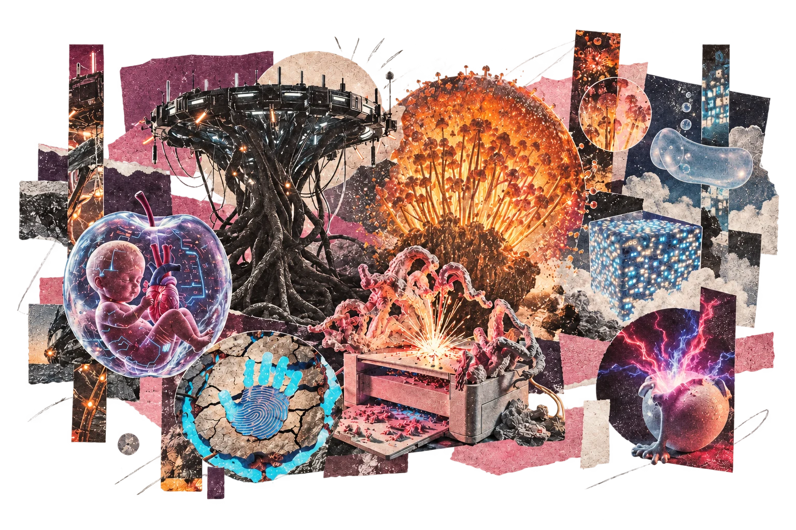
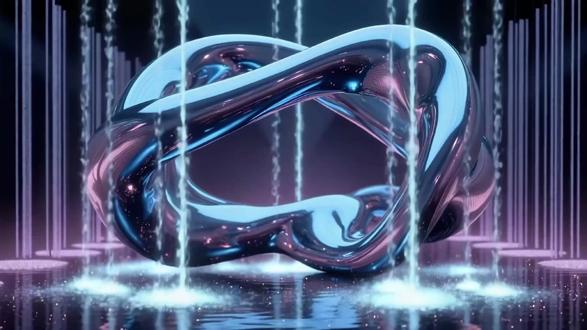
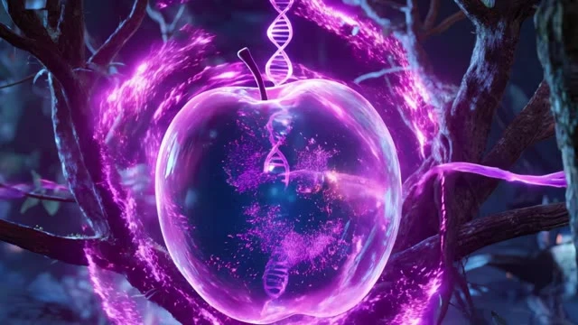
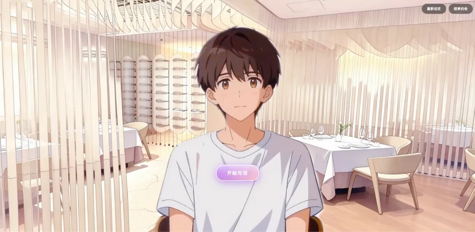
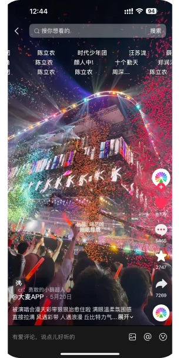
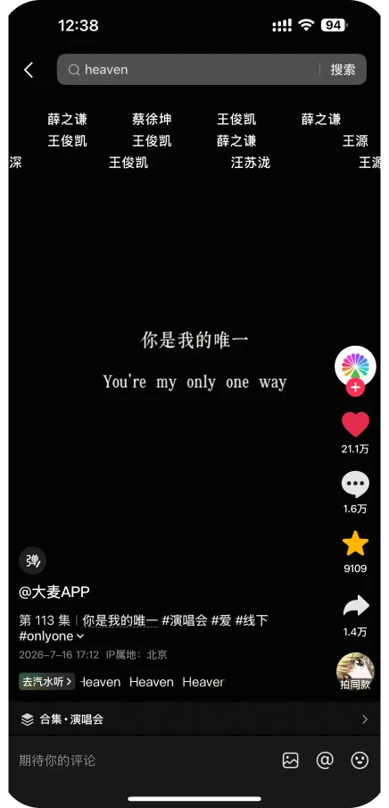

SELECTED WORKS · 2025—2026 PORTFOLIO / 01
BEYOND
ENGAGEMENT.

✳Images. Encounters.
Images. Encounters.
Shared moments.
I’m Minghui, a Digital Media Art student at the Communication University of China. I create AI films, interactive experiences and short-form content.
用影像讲述，用互动连接。
从AI创作到真实的观众回应。
FILM / SOCIAL MEDIA / INTERACTIVE COMMUNICATIONSCROLL TO EXPLORE ↓
THREE MEDIA, ONE PRACTICE
01 / AI FILMPost-Gene Decoding↗02 / INTERACTIONAI Dating Simulator↗03 / SOCIAL CONTENTDamai↗01 / AI FILM · SUMMER 2025后基因解码
POST-GENE
DECODING

▶ Watch the full film ↗Life beyond fixed boundaries.
An AI concept film exploring genetic fusion between humans, other organisms and technology. Eight original forms merge into hybrids and new bodies.
通过生命形态的不断融合，探索人类、其他生命与技术之间的边界。
MY CONTRIBUTION
Script writing
Narrative structure
AI footage editing
THE NARRATIVE8 ORIGINAL FORMS→4 HYBRIDS→2 PROTOTYPES→1 FINAL FORM

From script to screen View process sheet +
02 / INTERACTIVE PROTOTYPE · 2026约会大作战
AI DATING
SIMULATOR

VOICE + CHARACTERS + EVERYDAY GESTURESA space to practise
dating conversations.
Choose a character, speak with your virtual date, and use dining gestures to shape the encounter.
在餐厅情境中，通过语音、角色回应和用餐动作展开对话。
MY CONTRIBUTION
Web experience · Dialogue & voice integration · Facial expression recognition · Arduino interactions
Co-created character artwork and MBTI–zodiac profiles.Gentle & observant
ISFP / FEMALEWarm & encouraging
ENFJ / MALE01 / CHOOSE
Select a personality.
02 / TALK
Speak with your virtual date.
03 / ACT
Open a menu. Use cutlery. Raise a glass.
Inside the experience System & real conversation +
03 / DAMAI · SOCIAL CONTENT大麦 / 2026
MADE FOR
THE MOMENT.
Concert memories, artists and the anticipation of a ticket. Selected short-form work from my internship at Damai.
演唱会情绪、艺人内容、品牌互动与抢票话题。
参与内容策划、文案、视频制作与日常发布。

▶ WATCH ON DOUYIN ↗01 / CONCERT ATMOSPHERE
Confetti & collective memories.
Stage lighting, falling confetti and an emotive soundtrack bring a live concert onto a phone screen.
81KLIKES5,465COMMENTS7,270SHARES

▶ WATCH ON DOUYIN ↗02 / ARTIST MONTAGE
You’re my only one.
White lyrics on a black screen lead into beat-matched cuts across 13 singers, inviting fans to recognise their favourite artists.
211KLIKES16KCOMMENTS14KSHARES
THE VIDEO ARCHIVE
08 SELECTED WORKS ↘Metrics recorded from screenshots on 28 October 2026. Rounded counts follow Douyin’s display. Videos open on Douyin; playback may depend on region or login.
THANK YOU
FOR WATCHING.
MINGHUI ZHAO
Communication University of China
Digital Media Art · 2023–2027